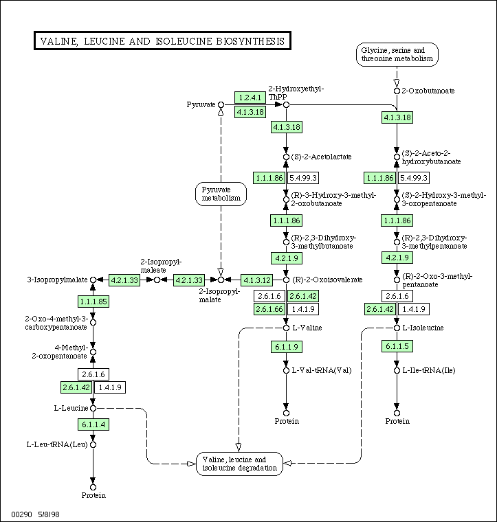

Copyright © 2003 Per Kraulis, Stockholm Bioinformatics Center, SBC
KTH Bioinformatics 2003, lecture 27 Feb 2003, Per Kraulis
Systems Biology is the study of life processes. The most fundamental life process is the metabolism of an organism, the basic chemical system that generates essential components such as amino acids, sugars and lipids, and the energy required to synthesize them and to use them in creating proteins and cellular structures. The system of connected chemical reactions is a metabolic network.
Below is an example of such a network. This is the subsystem for synthesis of the amino-acids valine, leucine and isoleucine in many living organisms. This image was taken from the KEGG database. In the original web page, this image is clickable, so that one may navigate to other, connected metabolic subsystems. The green boxes indicate enzymes which have been identified in the organism, in this case Escherichia coli. The designations are the so-called EC numbers (defined in the Enzyme Nomenclature publication), which is a hierarchical system to classify enzymes according to the catalyzed chemical reaction.
Signalling networks are another kind of network (or pathway) that are of central importance in biology. If the regulation of genes are involved, one often talks about genetic networks. Although the processes are different, and the types of proteins and other molecules are different, the overall picture is fairly similar: There are many components which interact in a connected network.
Typically, metabolic and signalling networks are viewed as different entities. In metabolic networks the flow of mass and energy is the essential purpose of the machinery. In signalling networks the purpose is the regulation of other processes, and the use of energy and mass flow is a requirement, but not really the point. However, there is an essential component of regulation also in metabolic networks: The enzymes are regulated through interactions with substrates and products so that the appropriate conditions in the cell are upheld.
One of the most important future challenges for bioinformatics is how to make all this information comprehensible in biological terms. This is necessary in order facilitate the use of the information for predictive purposes. We want to do more than just describe what is going on in an organism: We also wish to be able to say what will happend given some specific set of circumstances. This kind of predictive power will only be reached if the complexity of biological processes can be handled computationally.